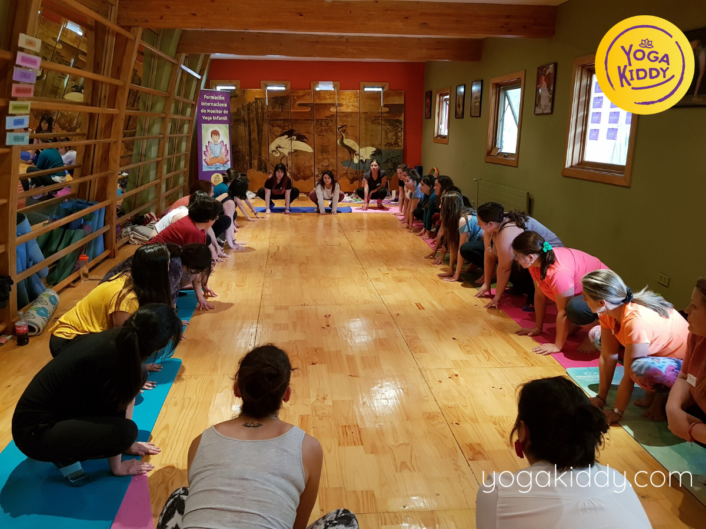
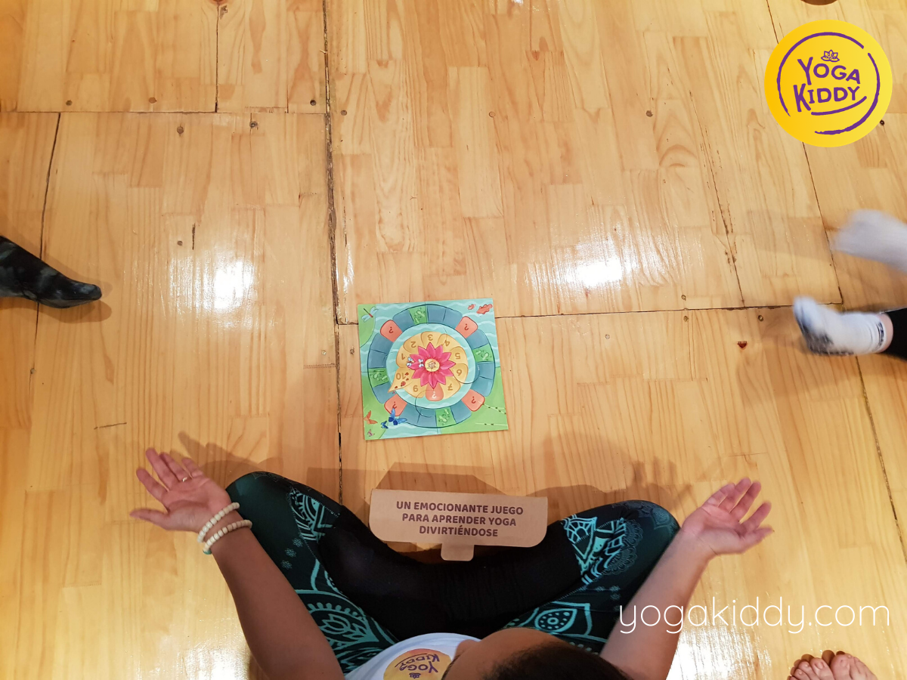
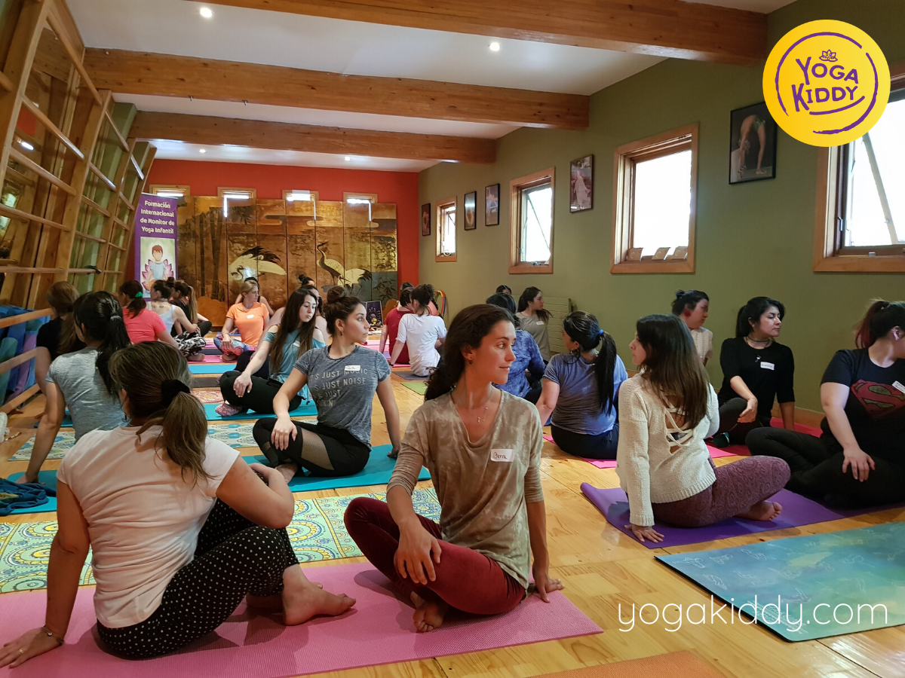
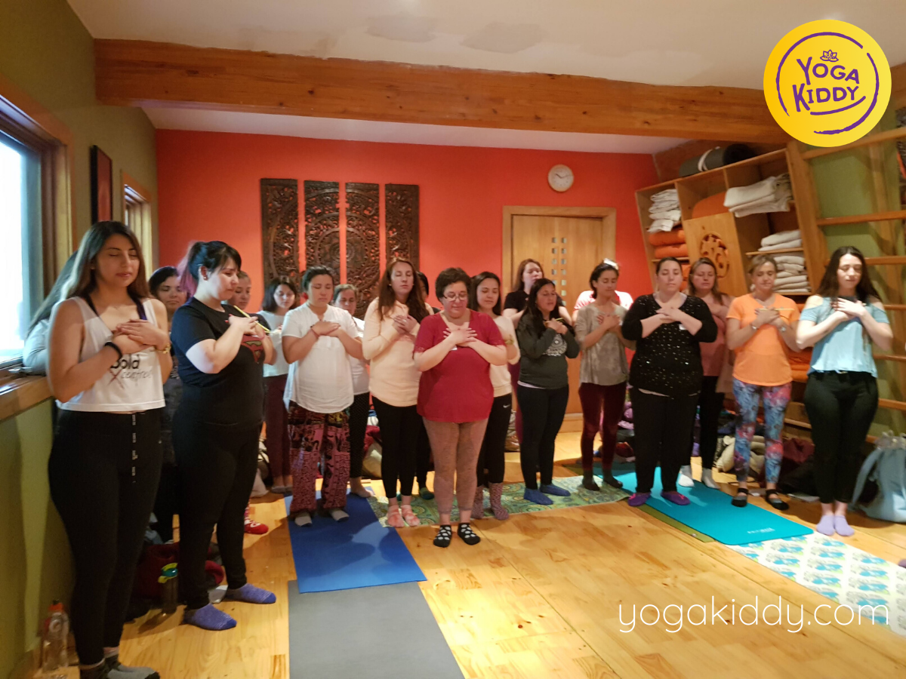
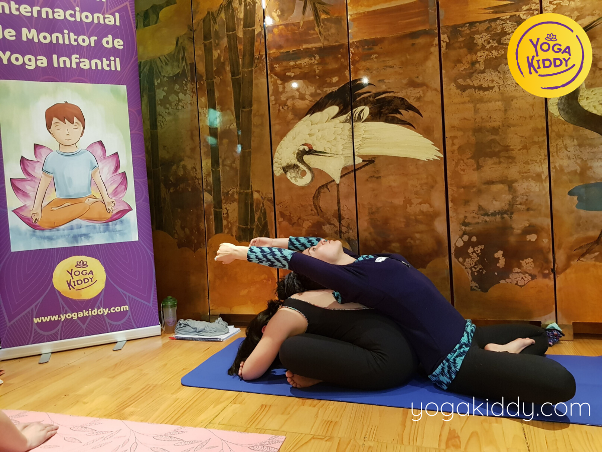
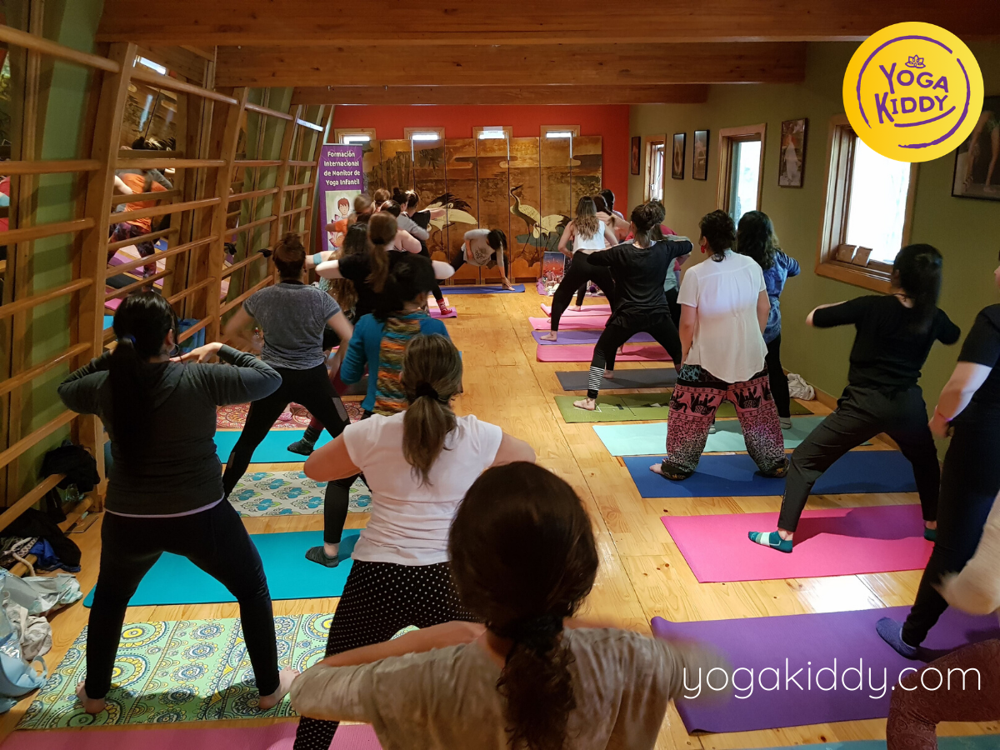
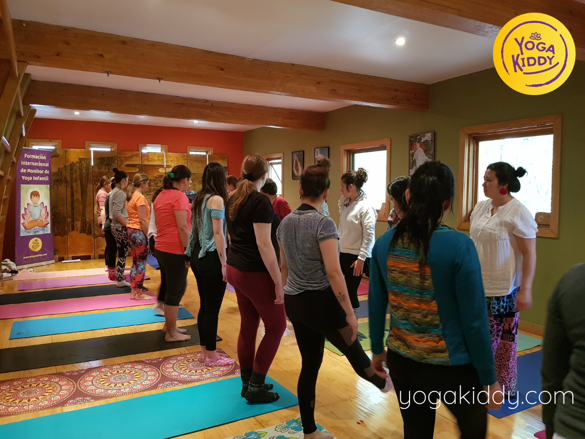
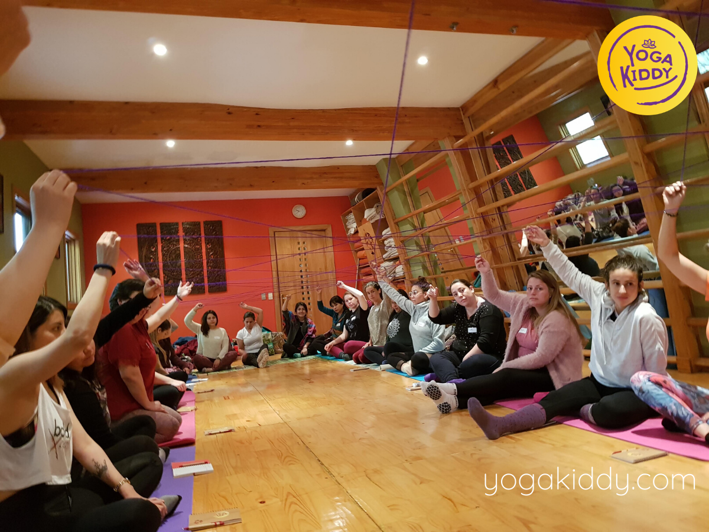
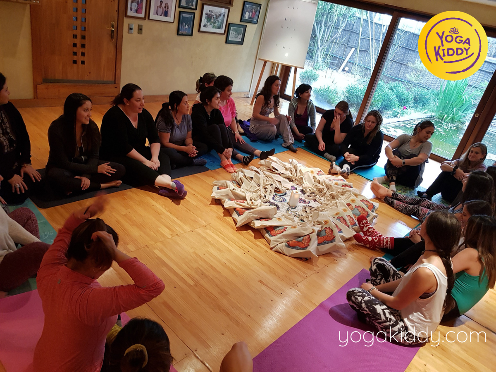
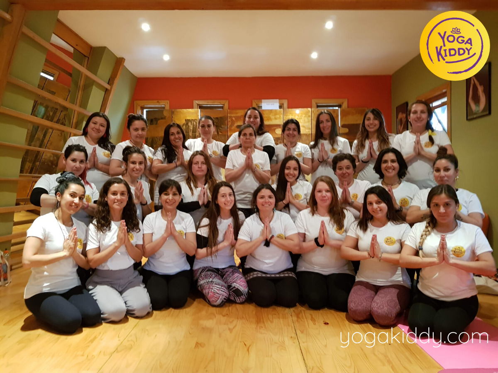

Nuestra formación de Monitor de Yoga Infantil también es un viaje hacia nuestra infancia. 👦👧
*
Es una invitación a volver ser niñ@s , volver a jugar, a sorprenderse, a crear, a imaginar, a soñar…💜🌈 Es un hermoso momento de conexión con nuestr@ niñ@ interior que por las circunstancias de la vida va quedándose quieto dentro de nosotr@s.
*
Sin duda, una experiencia enriquecedora y porsupuesto muy divertida 🤩
*










Muchas gracias Peggy, Carmen, Madhu se pasaron. Una excelente experiencia donde no solamente aprendimos de ustedes sino que se aprende de todo el grupo, asi que me voy con mi corazón llenito de aprendizaje con ganas de entregarlo a los niños, a la familia a todos. Ojalá esto se expanda y esto llegue mas lejos. Muchas gracias, se pasaron.
Hola mi nombre es Jossepp vengo de la ciudad de Los Andes y me voy feliz con este taller, es maravilloso. Volvi a mi infancia! Todo el tiempo estuve haciendo este curso pensando en los niños de ahora, en mi hija, en el futuro que podemos hacer, en el cambio que podemos generar nosotras como futuras monitoras. Se los recomiendo porque es un curso hecho desde el amor, un trabajo bien hecho, con mucho cariño. Ojalá que siga creciendo más!
Mi nombre es Paula y quería mas que nada agradecer esta instancia, porque ha sido una instancia de mucha reflexión, de mucho conocimiento, de compartir cosas que uno no comparte cotidianamente. Este es el inicio para un hermoso proyecto que han desarrollado las chicas y estoy muy agradecida de ser parte de esto. Ojalá esto se expanda lo más pronto posible.
Acabamos de terminar la formación de YogaKiddy, es una formación súper completa, multifuncional donde aprendí un montón de cosas para aplicar en los niños. La recomiendo absolutamente si quieren trabajar con niños y tener buenas ideas para poder involucrarlos y empezar a iniciarlos en el mundo del yoga.